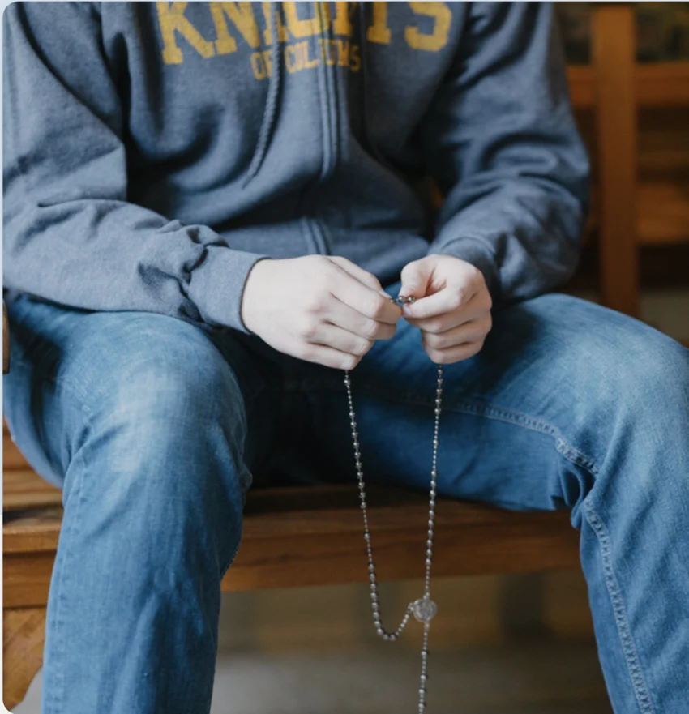

Council 6243 / Williamsburg, Brooklyn
Our Lady of
Mount Carmel
We’re the Knights of Columbus in Williamsburg, Brooklyn. Together with our families, we serve our parish and our neighbors.
Council calendar Meet the councilCouncil calendar
Knights’ meetings
First and third Mondays of each month.
Ladies Auxiliary meetings
Fourth Monday of each month.
Email the council to confirm the time and location.
Open council calendar
Our council
Faith in action
Our Lady of Mount Carmel Council 6243 and the Ladies Auxiliary serve our Brooklyn parish together. The council reports that the two groups give more than $10,000 a year to charitable causes.
Faith
We sponsor seminarians, give rosaries to children receiving First Holy Communion, promote Holy Hours and provide memorial Masses for brother Knights who have died.
Community
We provide winter coats for children, support the Global Wheelchair Mission, and volunteer at parish fundraisers and Ladies Auxiliary events. We also sponsor free throw, soccer and hockey competitions.
Family
We volunteer at the food pantry, help feed neighbors experiencing hunger or homelessness, support the Keep Christ in Christmas campaign and invite families to Holy Week services.
Life
We support Bridge to Life, pregnancy support centers and Special Olympics. Members attend the annual Pro-Life and Pro Vita Masses and participate in the Novena for Life.